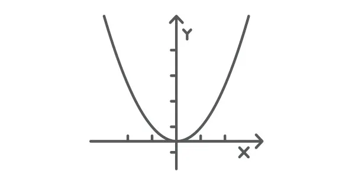
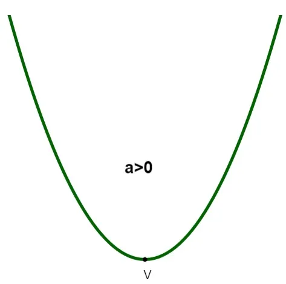

Definimos como função do 2º grau, ou função quadrática, a função R → R, ou seja, uma função em que o domínio e o contradomínio são iguais ao conjunto dos números reais, e que possui a lei de formação f(x) = ax² +bx +c. O gráfico da função quadrática é sempre uma parábola e possui elementos importantes, que são: as raízes da função quadrática, calculadas pelo x' e x''; o vértice da parábola, que pode ser encontrado a partir de fórmulas específicas.
O que é uma função do 2º grau? Uma função polinomial é conhecida como função do 2º grau, ou também como função quadrática, quando em sua lei de formação ela possui um polinômio de grau dois, ou seja, f(x) = ax² +bx +c, em que a, b e c são números reais, e a ≠ 0. Além da lei de formação, essa função possui domínio e contradomínio no conjunto dos números reais, ou seja, f: R→ R.
O gráfico da função do 2º grau é sempre uma parábola.
O gráfico de uma função do 2º grau é representado sempre por uma parábola. Existem duas possibilidades, dependendo do valor do coeficiente “a”: a concavidade da parábola pode ser para cima ou para baixo.

O ponto V representa o que conhecemos como vértice da parábola, que, nesse caso, é o ponto de mínimo, ou seja, o menor valor que f(x) pode assumir.
Se a < 0, a concavidade é para baixo:
Quando isso ocorre, perceba que, nesse caso, o vértice é o ponto de máximo da função, ou seja, maior valor que f(x) pode assumir.
Para fazer o esboço do gráfico, precisamos encontrar:
1 - os zeros da função;
2 - o ponto em que a função intercepta o eixo y;
3 - o ponto de máximo ou de mínimo da parábola, que conhecemos como vértice da parábola.